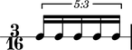

Introduction
Abjad publishes information about many durated score objects.
Notes, rests, chords and skips carry some duration attributes.
abjad> note = Note(0, (3, 16)) abjad> measure = Measure((3, 16), [note]) abjad> staff = RhythmicStaff([measure]) abjad> note.duration.written Rational(3, 16) abjad> show(staff)

Tuplets, measures, voices, staves and the other containers carry even more.
abjad> tuplet = FixedDurationTuplet((3, 16), Note(0, (1, 16)) * 5) abjad> measure = Measure((3, 16), [tuplet]) abjad> staff = RhythmicStaff([measure]) abjad> tuplet.duration.multiplier Rational(3, 5) abjad> show(staff)
The next chapters document duration in Abjad and explain core duration concepts.